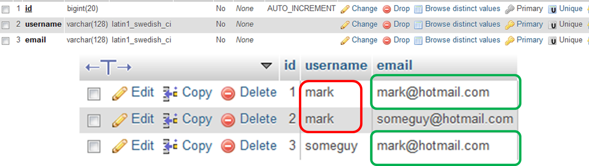

Webtechnology
Chapter 8 – PHP and MySQL
Overview
MySQL
MySQL
- MySQL is an open-source database management system (DBMS).
- Can be downloaded for free from http://www.mysql.com
- MySQL is included in XAMPP
- phpMyAdmin allows for management of MySQL database through web interface.
- Included in XAMPP
- Can also be downloaded separately
MySQL
- Inexpensive - free for most uses.
- Fast - one of the fastest relational databases currently available.
- Easy to use - easy to install and manage.
- Portable - runs on a whole variety of operating systems (linux, windows, android, ...).
MySQL
- Supports Structured Query Language.
- Supports access from multiple clients.
- Security - protect access to data.
- Supports referential integrity
- Keeps relations between tables intact. Can’t delete referenced row unless referencing row is deleted first.
- When using InnoDB.
- Supports transactional processing
- Grouped SQL statements.
- All or nothing (rollback)
Accessing MySQL
- Option 1:
- Use XAMPP + included phpMyAdmin
- Option 2:
- Option 3:
- Use XAMPP for MySQL instance
- phpMyAdmin: http://www.phpmyadmin.net/home_page/downloads.php
Using phpMyAdmin to manage a database
Creating a database
- Select the databases tab.
- Give the database a name
- Make sure to select UTF8 standard collation (ci = case insensitive)
- Click create
Creating tables
- Open the newly created database.
- Click create table.
Creating tables
- In a relational database, a unique key index can uniquely identify each row of data values in a database table.
- Comprises a single column or a set of columns in a single database table.
- No two distinct rows or data records in a database table can have the same data value (or combination of data values) in those unique key index columns if NULL values are not used.
- Depending on its design, a database table may have many unique key indexes but at most one primary key index.
Creating tables
- A primary key is a combination of columns which uniquely specify a row.
- It is a special case of unique keys.
- One difference is that primary keys have an implicit NOT NULL constraint while unique keys do not.
- A table can have at most one primary key, but more than one unique key.
- Another unique characteristic of a Primary Key is that a Primary Key must also serve as a Foreign Key on a related table.
- The foreign key can be used to cross-reference tables.
Creating tables
Creating tables
- Unique key comprises a single column or a set of columns in a single database table.
- Verified in MySQL
- Combination of all unique key fields needs to be unique.

Inserting test data
- phpMyAdmin can be used to insert test data in the database
Executing SQL queries
- You can test SQL statements using the SQL query runner in phpMyAdmin.
Accessing a MySQL database from PHP
PHP Data Objects (PDO)
- PDO defines a consistent interface for accessing databases.
- This means that the same code can be used to access several types of databases (MySQL, SQL server, SQLite, ...).
- Only available since PHP 5
PHP Data Objects (PDO)
- Before:
- mysql_connect(): Opens or reuses a connection to a MySQL server.
- mssql_connect(): establishes a connection to a MS SQL server.
- sqlite_open(): Opens an SQLite database and create the database if it does not exist.
- pg_connect(): Open a PostgreSQL connection.
- px_open_fp(): Open paradox database.
- ...
PDO methods
- Once the PDO object is constructed, its methods can be used to execute SQL statements.
Connecting to a MySQL DB
- PDO constructor requires a DSN, username and password.
- Data Source Name (DSN)
- The Data Source Name, or DSN, contains the information required to connect to the database.
- In case of MySQL:
“mysql:host=host_address;port=portnumber;dbname=database_name”
Connecting to a MySQL DB
PDO::__construct— Creates a PDO instance representing a connection to a database
<?php
error_reporting(E_ALL);
ini_set('display_errors', '1');
// Data Source Name
$dsn = "mysql:host=localhost;port=3306;dbname=nico_webtech_pdo";
$username = "nico_webtech_pdo";
$password = "**************";
try {
// Create a PHP Data Object
$db = new PDO($dsn, $username, $password);
echo "Connection was succesfully made with the database";
} catch (PDOException $e) {
echo 'Connection failed: ' . $e->getMessage();
exit();
}
?>
Executing a SELECT statement
- To execute an SQL select statement we can use the query method of the PDO instance.
PDO::query— Executes an SQL statement, returning a result set as aPDOStatementobject.- Requires an SQL selection statement as argument and returns the result set (if any).
Executing a SELECT statement
<?php
$db = new PDO($dsn, $username, $password);
//...
// Create select statement
$query = 'SELECT username, email FROM users WHERE 1';
$results = $db->query($query); // Execute query
// Output the results
foreach ($results as $row) {
echo "<p>" . $row['username'] . " - " . $row['email'] . "</p>";
}
?>
- PDOStatement enables you to iterate over the rowset returned by a successfully executed SELECT statement.
Executing a SELECT statement
- To execute an SQL statement you can also use the
PDO::execmethod. PDO::query— Executes an SQL statement, returning a result set as a PDOStatement object.PDO::exec— Execute an SQL statement and return the number of affected rows.
User input - Named placeholders
- In most situations we want to fetch data from the database using specific select statements and criteria to which the selected data must correspond.
- The criteria are in most cases not static but determined at run-time
- For example by user input.
- One way we can achieve this is by using the previous proposed query method.
User input - Named placeholders
- Plain substitution also works but is less flexible and safe
<?php
$db = new PDO($dsn, $username, $password);
//...
// Create select statement
$un = "nico";
$query = "SELECT username, email FROM users WHERE username='$un'";
$results = $db->query($query); // Execute query
// Output the results
foreach ($results as $row) {
print "<p>" . $row['username'] . " - " . $row['email'] . "</p>";
}
?>
User input - Named placeholders
<?php
//...
$query = "SELECT username, email FROM users WHERE username='$un'";
//...
?>
- The previous code is not optimized and has one big disadvantage
- SQL INJECTIONS
- What if
$unis obtained from user input and the user were to submit this as the$unvalue:
$un = "' OR '1'='1"
User input - Named placeholders
- A prepared statement is a precompiled SQL statement that can be executed multiple times by sending just the data to the server.
- It has the added advantage of automatically making the data used in the placeholders safe from SQL injection attacks.
- You use a prepared statement by including placeholders in your SQL.
User input - Named placeholders
<?php
$db = new PDO($dsn, $username, $password);
$un = "nico";
$query = "SELECT username, email FROM users WHERE username=:un";
$pdostat = $db->prepare($query); // Prepare
$pdostat->execute(array(':un' => $un)); // Replace placeholders
$results = $pdostat->fetchAll(); // Fetch results
outputUserDataset($results); // Output the results
?>
PDO::prepare— Prepares a statement for execution and returns a PDOStatement object (or false on fail)PDOStatement::execute— Executes a prepared statement (returns true on success).PDOStatement::fetchAll— Returns an array containing all of the result set rows.
Fetch and Close cursor
- If you use
$statement->fetch(), you will also have to use$statement->closeCursor()afterwards, to be able to execute another query.PDOStatement::fetch— Fetches the next row from a result set.PDOStatement::closeCursor— Closes the cursor, enabling the statement to be executed again.
- Alternatively you can use
$statement>fetchAll()without$statement>closeCursor().
Executing an INSERT statement
<?php
$newvalues = array( ":username" => "john",
":password" => "DADADA",
":email" => "john@rambo.com",
":display_name" => "John Rambo");
$insert = "INSERT INTO users (username, password, email, display_name)
VALUES (:username, :password, :email, :display_name)";
$pdostat = $db->prepare($insert);
$succes = $pdostat->execute($newvalues);
echo $succes ? "<p>Insert successfully.</p>" : "<p>Failed to insert</p>";
// Print number of rows that were affected (should be 1)
print "Affected rows: " . $pdostat->rowCount();
?>
- Note not to add single quotes around your named placeholders.
Executing an UPDATE statement
<?php
$newvalues = array( ":username" => "nicodw",
":email" => "mynew_email2@donaim.com");
$update = "UPDATE users SET email=:email WHERE username=:username";
$pdostat = $db->prepare($update);
$success = $pdostat->execute($newvalues);
echo $success ? "<p>Update successfully.</p>" : "<p>Failed to update</p>";
// Print number of rows that were affected (should be 1)
print "Affected rows: " . $pdostat->rowCount();
?>
Executing a DELETE statement
<?php
$un = "nicdw";
$delete = "DELETE FROM users WHERE username=:username";
$pdostat = $db->prepare($delete);
$success = $pdostat->execute(array(':username' => $un));
echo $succes ? "<p>Delete successfully.</p>" : "<p>Failed to delete</p>";
// Print number of rows that were affected (should be 1)
print "Affected rows: " . $pdostat->rowCount();
?>
Single prepare, multiple execution
- As mentioned before, a statement can be executed multiple times after being prepared.
<?php
$records = array(
array(
":username" => "jenny",
":password" => "dfgdfgdfg44tret6ewr",
":email" => "jenny@domain.com",
":display_name" => "Jenny The Merx"
),
array(
":username" => "donny",
":password" => "sdfsdfsdsdfrtutytytyry",
":email" => "donny@domain.com",
":display_name" => "Donny English"
),
array(
":username" => "marry",
":password" => "sdfsdfsdtyttyyutty",
":email" => "marry@domain.com",
":display_name" => "Marry Tebo"
)
);
?>
Single prepare, multiple execution
<?php
$insert = "INSERT INTO users (username, password, email, display_name)
VALUES (:username, :password, :email, :display_name)";
$pdostat = $db->prepare($insert);
$success = true;
foreach ($records as $newvalues) {
$success = $success && $pdostat->execute($newvalues);
}
echo $success ? "<p>Insert successfully.</p>" : "<p>Failed to insert</p>";
?>
Singleton Pattern
Singleton Pattern
- Sometimes it's important to have only one instance for a class.
- For example, in a system there should be only one window manager (or only a file system or only a print spooler).
- Usually singletons are used for centralized management of internal or external resources and they provide a global point of access to themselves.
Singleton Pattern
- The singleton pattern is one of the simplest design patterns:
- It involves only one class which is responsible to instantiating itself, to make sure it creates not more than one instance
- At the same time it provides a global point of access to that instance.
- In this case the same instance can be used from everywhere, being impossible to invoke the constructor directly each time.
Singleton Pattern
- Intent
- Ensure that only one instance of a class is created.
- Provide a global point of access to the object.
- Implementation
- The implementation involves
- a static member in the "Singleton" class
- a private constructor
- and a static public method that returns a reference to the static member.
- The implementation involves
Singleton Pattern
PHP Implementation
<?php
class Database
{
private static $db = NULL;
const DSN = "mysql:host=localhost;port=3306;dbname=nico_webtech_pdo";
const USERNAME = "nico_webtech_pdo";
const PASSWORD = "QwX5NQHm2Hwp2daQ";
public static function getInstance() {
if (self::$db) {
return self::$db;
}
//...
?>
PHP Implementation
<?php
//...
try {
self::$db = new PDO(self::DSN, self::USERNAME, self::PASSWORD);
return self::$db;
}
catch (PDOException $e) {
echo 'Connection failed: ' . $e->getMessage();
exit();
}
return self::$db;
}
}
?>
PHP Implementation
<?php
// Create select statement
$query = 'SELECT username, password, email, display_name FROM users WHERE 1';
$results = Database::getInstance()->query($query); // Execute query
outputUserDataset($results);
?>
Implementation using config file
- Using a config file (config_db.ini) to keep sensitive data such as usernames and password
db_driver=mysql
db_user=nico_webtech_pdo
db_password=*****************
[dsn]
host=localhost
port=3306
dbname=nico_webtech_pdo
Implementation using config file
<?php
class Database
{
private static $db = NULL;
const INI_FILE = "config_db.ini";
public static function getInstance()
{
if (self::$db) {
return self::$db;
}
//...
}
}
?>
Implementation using config file
<?php
//...
// Parse config
if (!$settings = parse_ini_file(self::INI_FILE, TRUE))
throw new exception('Unable to open ' . self::INI_FILE);
$dsn = $settings["db_driver"] . ":";
foreach ($settings ["dsn"] as $key => $val)
$dsn .= "$key=$val;";
//...
}
}
?>
Implementation using config file
<?php
//...
try {
self::$db = new PDO($dsn, $settings["db_user"],
$settings["db_password"]);
return self::$db;
}
catch (PDOException $e) {
echo 'Connection failed: ' . $e->getMessage();
exit();
}
}
}
?>